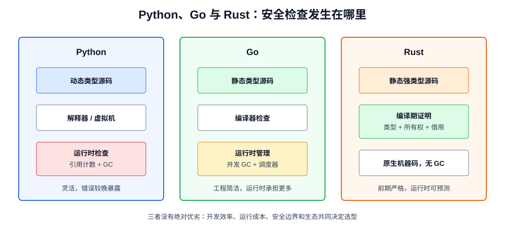
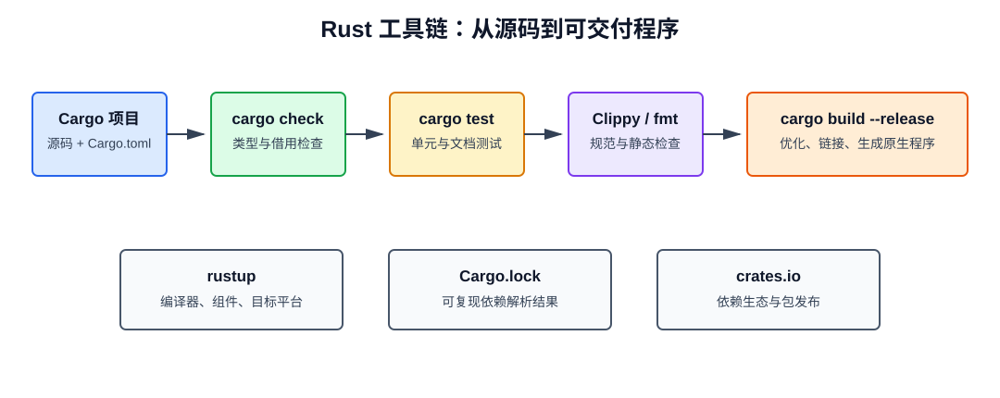
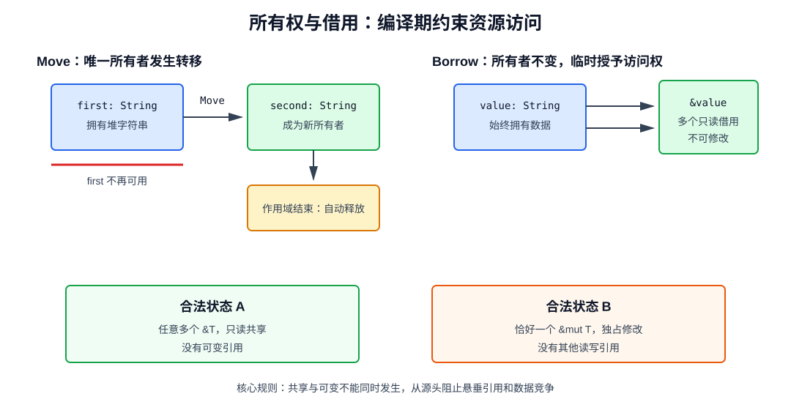
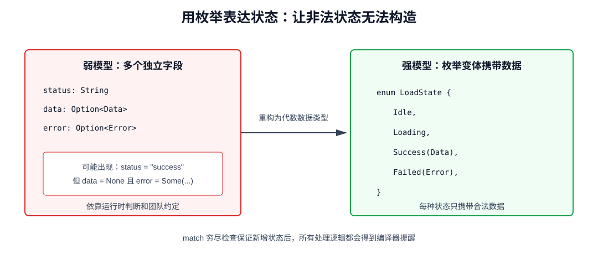
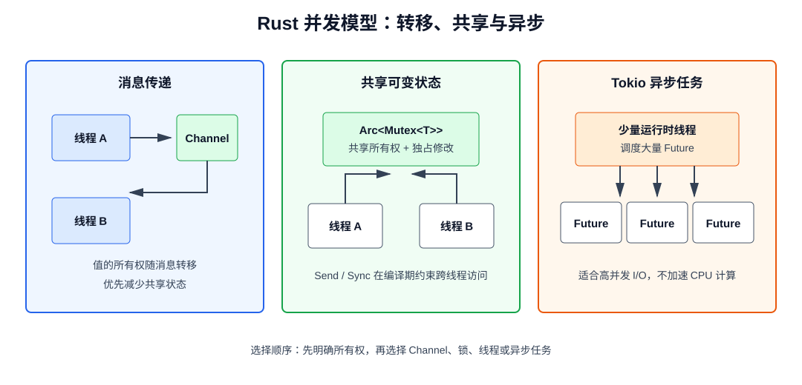

Rust 入门手册：面向 Go 与 Python 开发者
本文面向已经掌握 Go 和 Python 的开发者，使用现代 Rust 2024 Edition。目标不是罗列语法，而是建立所有权、类型系统和零成本抽象的正确认知，并能独立创建、测试和维护一个 Rust 项目。
1. 为什么学习 Rust
Rust 是一门强调内存安全、并发安全和可预测性能的系统编程语言。它没有垃圾回收器，却能在编译期阻止悬垂引用、数据竞争和大量内存错误。
Rust 适合：
- 操作系统、数据库、浏览器和编译器等基础设施；
- 高性能网络服务、代理、网关和 CLI；
- WebAssembly；
- 嵌入式系统；
- Python/Go 的高性能扩展；
- 对延迟、内存占用和可靠性要求较高的服务。
Rust 不一定适合：
- 生命周期很短、性能要求低的一次性脚本；
- 团队尚未准备承担较高学习成本的普通 CRUD；
- 强依赖某个只有 Python/Go 生态成熟实现的领域；
- 需求变化极快、验证速度远重要于运行效率的原型。
1.1 与 Go、Python 的核心差异
| 维度 | Python | Go | Rust |
|---|---|---|---|
| 类型 | 动态类型 | 静态类型 | 静态类型，表达能力更强 |
| 内存管理 | 引用计数 + GC | 并发 GC | 所有权 + 借用，无 GC |
| 空值 | None |
nil |
Option<T> |
| 错误 | 异常 | (value, error) |
Result<T, E> |
| 并发安全 | 主要靠运行时和约定 | Race Detector 辅助 | 大量错误在编译期拒绝 |
| 泛型抽象 | 鸭子类型 | 接口 + 泛型 | Trait + 泛型 + 关联类型 |
| 构建工具 | pip/uv/poetry | go 命令 |
Cargo |
| 运行性能 | 通常较低 | 高 | 接近 C/C++ |
| 学习曲线 | 平缓 | 平缓 | 前期较陡 |
对 Go/Python 开发者最重要的转变是：
Rust 不允许先制造一个可能无效的运行时状态，再靠约定避免使用；它倾向于让类型系统只允许构造合法状态。

2. 安装工具链
2.1 使用 rustup 安装
rustup 管理 Rust 编译器、标准库、目标平台和工具链版本；cargo 管理项目、依赖、构建、测试和发布。
Windows 推荐先安装 Visual Studio Build Tools，并勾选“使用 C++ 的桌面开发”，然后安装 Rust：
winget install Rustlang.Rustup
也可以使用官方安装器：
https://rustup.rs/
安装后重新打开终端：
rustc --version
cargo --version
rustup --version
Linux/macOS：
curl --proto '=https' --tlsv1.2 -sSf https://sh.rustup.rs | sh
source "$HOME/.cargo/env"
2.2 常用组件
# 更新稳定工具链
rustup update stable
# 设置默认工具链
rustup default stable
# 安装格式化和静态检查组件
rustup component add rustfmt clippy
# 查看已安装工具链
rustup show
编辑器推荐 VS Code + rust-analyzer。不要同时启用旧版 Rust 扩展，以免语言服务冲突。
2.3 第一个项目
cargo new hello-rust
cd hello-rust
cargo run
目录结构：
hello-rust/
├── Cargo.toml
└── src/
└── main.rs
src/main.rs：
fn main() {
println!("Hello, Rust!");
}
常用 Cargo 命令：
cargo check # 只检查，不生成最终二进制，开发时最快
cargo build # Debug 构建
cargo build --release
cargo run
cargo test
cargo fmt
cargo clippy -- -D warnings
cargo doc --open

3. 变量、类型与表达式
3.1 变量默认不可变
fn main() {
let count = 1;
// count += 1; // 编译错误
let mut total = 10;
total += 5;
println!("{count}, {total}");
}
Go 的变量默认可变，Python 变量名可随时重新绑定。Rust 要求共享和修改都显式表达，默认不可变可以降低状态复杂度。
3.2 类型推断与显式标注
let age: u8 = 18;
let score = 98.5_f64;
let retries = 3; // 根据上下文推断，通常为 i32
常见标量类型：
| 类型 | 含义 |
|---|---|
i8～i128、isize |
有符号整数 |
u8～u128、usize |
无符号整数 |
f32、f64 |
浮点数 |
bool |
布尔值 |
char |
Unicode 标量值，4 字节 |
数组和索引通常使用 usize。整数类型不会隐式转换：
let a: u32 = 10;
let b: u64 = 20;
let sum = u64::from(a) + b;
3.3 Shadowing
同名 let 会创建新绑定，可以改变类型：
let input = " 42 ";
let input = input.trim();
let input: i32 = input.parse().expect("必须是整数");
这不是可变赋值，而是旧绑定被新绑定遮蔽。它适合表达数据清洗阶段。
3.4 元组与数组
let user = ("alice", 30, true);
let (name, age, active) = user;
println!("{name} {age} {active}");
let numbers = [1, 2, 3, 4];
let zeros = [0; 8];
println!("{}", numbers[0]);
数组长度是类型的一部分，[i32; 4] 与 [i32; 8] 是不同类型。动态长度集合使用 Vec<T>。
3.5 语句与表达式
Rust 中代码块可以产生值，末尾表达式没有分号：
let status = if age >= 18 {
"adult"
} else {
"minor"
};
let area = {
let width = 10;
let height = 20;
width * height
};
加分号会把表达式变成返回 () 的语句。这是初学者常见错误。
4. 函数与控制流
4.1 函数
参数类型和返回类型必须显式声明：
fn add(left: i32, right: i32) -> i32 {
left + right
}
fn log_message(message: &str) {
println!("{message}");
}
() 是单元类型，类似 Go 中无返回值函数的语义，也类似 Python 的隐式 None，但它是普通类型。
4.2 条件与循环
for number in 0..5 {
println!("{number}");
}
let mut remaining = 3;
while remaining > 0 {
remaining -= 1;
}
let result = loop {
if remaining == 0 {
break "done";
}
};
范围：
0..5：包含 0，不包含 5；0..=5：包含 0 和 5。
4.3 match
match 必须穷尽所有可能：
fn describe(code: u16) -> &'static str {
match code {
200 => "ok",
400..=499 => "client error",
500..=599 => "server error",
_ => "other",
}
}
它比 Go 的 switch 更强，因为分支可解构数据且编译器检查穷尽性。
5. 所有权：Rust 的核心
Python 和 Go 通过运行时管理大部分内存。Rust 把对象何时释放、谁可以访问等约束放到编译期。
5.1 三条所有权规则
- 每个值都有一个所有者；
- 同一时刻只有一个所有者；
- 所有者离开作用域时，值被自动释放。
{
let message = String::from("hello");
println!("{message}");
} // message 离开作用域，堆内存自动释放
这类似 C++ 的 RAII，但由借用检查器进一步保证引用安全。
5.2 Move
let first = String::from("hello");
let second = first;
println!("{second}");
// println!("{first}"); // 编译错误：first 已被移动
String 在栈上保存指针、长度和容量，字符数据在堆上。如果简单复制这三个字段，两个变量会在离开作用域时重复释放同一内存。Rust 选择转移所有权，并让旧绑定失效。
Go 赋值结构体通常复制值，Python 赋值通常复制引用；Rust 是否 Move 取决于类型是否实现 Copy。
5.3 Copy 与 Clone
整数、布尔、浮点和仅包含 Copy 字段的简单类型可按位复制：
let first = 10;
let second = first;
println!("{first} {second}");
堆数据需要显式深拷贝：
let first = String::from("hello");
let second = first.clone();
println!("{first} {second}");
不要为了绕过借用错误到处 clone()。克隆有运行时成本，也可能掩盖所有权设计问题。
5.4 函数会取得所有权
fn consume(value: String) {
println!("{value}");
}
fn main() {
let message = String::from("hello");
consume(message);
// message 已不可用
}
可以返回所有权，但多数只读函数应接受借用。

6. 借用与引用
引用允许函数临时访问值，而不取得所有权。
6.1 不可变借用
fn length(value: &str) -> usize {
value.len()
}
fn main() {
let message = String::from("hello");
let size = length(&message);
println!("{message}: {size}");
}
优先接受 &str 而不是 &String，这样函数同时支持 String 和字符串字面量。
6.2 可变借用
fn append_suffix(value: &mut String) {
value.push_str("-done");
}
fn main() {
let mut task = String::from("build");
append_suffix(&mut task);
println!("{task}");
}
同一时刻：
- 可以有任意多个不可变引用
&T； - 或只能有一个可变引用
&mut T； - 两者不能在重叠的使用范围内并存。
let mut value = String::from("hello");
let first = &value;
let second = &value;
println!("{first} {second}");
let third = &mut value;
third.push('!');
不可变引用最后一次使用后，其借用即可结束，不必等到大括号末尾。这称为非词法生命周期。
6.3 借用规则解决什么
它在编译期阻止：
- 迭代集合时修改导致迭代器失效；
- 一个线程写、另一个线程无同步读取；
- 返回局部变量引用；
- 多个位置同时修改共享对象。
借用检查器不是“阻止你写代码”，而是在要求你明确数据的所有者、共享方式和修改边界。
7. String、str 与切片
7.1 两种常见字符串
| 类型 | 所有权 | 存储 | 常见用途 |
|---|---|---|---|
String |
拥有 | 堆，可增长 | 保存和修改文本 |
&str |
借用 | 指向 UTF-8 字节序列 | 参数、切片、字面量 |
let owned = String::from("你好 Rust");
let borrowed: &str = &owned;
let literal: &'static str = "hello";
7.2 不能按整数索引字符串
let text = String::from("你好");
// let first = text[0]; // 编译错误
Rust 字符串是 UTF-8：
- 字节：
text.bytes()； - Unicode 标量值：
text.chars()； - 用户感知字符：需要
unicode-segmentation等库。
for character in "你好".chars() {
println!("{character}");
}
7.3 切片
fn first_word(text: &str) -> &str {
match text.find(' ') {
Some(index) => &text[..index],
None => text,
}
}
通用数组切片：
fn sum(values: &[i32]) -> i32 {
values.iter().sum()
}
优先使用 &[T] 作为只读集合参数，而不是 &Vec<T>。
8. 结构体与方法
#[derive(Debug, Clone)]
struct User {
id: u64,
name: String,
active: bool,
}
impl User {
fn new(id: u64, name: impl Into<String>) -> Self {
Self {
id,
name: name.into(),
active: true,
}
}
fn deactivate(&mut self) {
self.active = false;
}
fn display_name(&self) -> &str {
&self.name
}
}
fn main() {
let mut user = User::new(1, "Alice");
user.deactivate();
println!("{user:?}");
}
方法第一个参数：
self：取得所有权；&self：只读借用；&mut self：可变借用。
Rust 没有类继承。数据放在结构体中，共同行为由 Trait 表达。
8.1 更新语法也可能 Move
let first = User::new(1, "Alice");
let second = User {
id: 2,
..first
};
first.name 会移动给 second，因此 first 不能再作为完整值使用。Go 开发者尤其容易忽略这一点。
9. 枚举与模式匹配
Rust 枚举的每个变体可以携带不同数据，是代数数据类型。
enum Command {
Start,
Stop { force: bool },
Write(String),
Move { x: i32, y: i32 },
}
fn execute(command: Command) {
match command {
Command::Start => println!("start"),
Command::Stop { force: true } => println!("force stop"),
Command::Stop { force: false } => println!("graceful stop"),
Command::Write(content) => println!("write: {content}"),
Command::Move { x, y } => println!("move to {x}, {y}"),
}
}
在 Python 中常用类层次或字符串标签，在 Go 中常用接口或 type + payload 结构体。Rust 枚举能让编译器检查每种状态是否都被处理。

9.1 Option<T> 代替空值
fn find_user(id: u64) -> Option<String> {
if id == 1 {
Some(String::from("Alice"))
} else {
None
}
}
match find_user(1) {
Some(name) => println!("found {name}"),
None => println!("not found"),
}
常用组合方法：
let length = find_user(1)
.map(|name| name.len())
.unwrap_or(0);
不要在业务代码中无节制使用 unwrap()。它在 None 时会 Panic。
9.2 if let 与 let else
只关心一个模式：
if let Some(name) = find_user(1) {
println!("{name}");
}
不匹配时提前退出：
fn print_name(id: u64) {
let Some(name) = find_user(id) else {
println!("not found");
return;
};
println!("{name}");
}
10. 错误处理
Rust 将错误分为：
- 可恢复错误：
Result<T, E>； - 程序不变量被破坏：
panic!。
10.1 Result<T, E>
use std::fs;
use std::io;
fn read_config(path: &str) -> Result<String, io::Error> {
let content = fs::read_to_string(path)?;
Ok(content)
}
? 的行为：
Ok(value)：取出 value 继续执行；Err(error)：转换错误并提前返回。
它类似 Go 中反复出现的：
value, err := operation()
if err != nil {
return err
}
但 Rust 将成功值和错误绑定在同一个枚举中，无法忘记检查错误后仍误用无效结果。
10.2 组合多个错误
应用程序可使用 anyhow 提供上下文：
cargo add anyhow
use anyhow::{Context, Result};
use std::fs;
fn load_config(path: &str) -> Result<String> {
fs::read_to_string(path)
.with_context(|| format!("读取配置文件失败：{path}"))
}
库应优先使用 thiserror 定义稳定错误类型：
cargo add thiserror
use thiserror::Error;
#[derive(Debug, Error)]
enum ConfigError {
#[error("配置文件不存在：{0}")]
NotFound(String),
#[error("读取配置失败")]
Io(#[from] std::io::Error),
}
经验：
- 二进制应用：
anyhow方便聚合上下文； - 公共库：
thiserror提供可匹配的错误 API； panic!不用于普通输入错误和网络错误；- 在边界添加上下文，不要重复打印并返回同一个错误。
11. 集合
11.1 Vec<T>
let mut numbers = vec![1, 2, 3];
numbers.push(4);
for number in &numbers {
println!("{number}");
}
if let Some(first) = numbers.first() {
println!("first: {first}");
}
numbers[100] 越界会 Panic；numbers.get(100) 返回 Option<&T>。
11.2 HashMap<K, V>
use std::collections::HashMap;
let mut scores = HashMap::new();
scores.insert(String::from("Alice"), 90);
scores.insert(String::from("Bob"), 80);
scores
.entry(String::from("Alice"))
.and_modify(|score| *score += 5)
.or_insert(60);
把拥有所有权的 String 插入 Map 会发生 Move：
let name = String::from("Alice");
scores.insert(name, 100);
// name 已经移动
11.3 选择集合
| 需求 | 类型 |
|---|---|
| 动态连续数组 | Vec<T> |
| 双端队列 | VecDeque<T> |
| 键值映射 | HashMap<K, V> |
| 有序映射 | BTreeMap<K, V> |
| 唯一集合 | HashSet<T> |
| 有序唯一集合 | BTreeSet<T> |
12. 泛型与 Trait
Trait 类似 Go 接口，但支持默认实现、关联类型、泛型约束和静态分发。
trait Summary {
fn summary(&self) -> String;
fn category(&self) -> &'static str {
"general"
}
}
struct Article {
title: String,
}
impl Summary for Article {
fn summary(&self) -> String {
self.title.clone()
}
}
12.1 泛型约束
fn print_summary(item: &impl Summary) {
println!("{}", item.summary());
}
fn print_two<T>(left: &T, right: &T)
where
T: Summary,
{
println!("{}", left.summary());
println!("{}", right.summary());
}
impl Trait 和泛型通常使用静态分发，编译器会为具体类型生成代码，没有虚调用开销。
12.2 Trait Object
运行时需要存放不同具体类型时：
fn print_all(items: &[Box<dyn Summary>]) {
for item in items {
println!("{}", item.summary());
}
}
dyn Trait 使用动态分发，类似 Go 接口值，但 Rust 需要显式写 dyn。
12.3 Derive
#[derive(Debug, Clone, PartialEq, Eq, Hash)]
struct UserId(u64);
Derive 宏可自动实现常见 Trait。只有语义正确时才派生，例如包含浮点数的类型通常不能直接实现 Eq。
13. 生命周期
生命周期描述引用之间的有效范围关系，不会延长对象寿命，也不是运行时计时器。
13.1 为什么需要标注
fn longest<'a>(left: &'a str, right: &'a str) -> &'a str {
if left.len() >= right.len() {
left
} else {
right
}
}
'a 表示返回引用不会比两个输入引用中较短的那个活得更久。
错误示例：
// fn invalid() -> &str {
// let value = String::from("temporary");
// &value
// } // value 被释放，引用将悬垂
可行方案是返回所有权：
fn valid() -> String {
String::from("owned")
}
13.2 生命周期省略
多数常见函数无需手写生命周期：
fn first_word(text: &str) -> &str {
text.split_whitespace().next().unwrap_or("")
}
先理解“返回值借用了谁”，编译器要求时再添加标注，不要一开始给所有引用都写生命周期。
13.3 结构体持有引用
struct Excerpt<'a> {
content: &'a str,
}
这表示 Excerpt 不能比 content 指向的数据活得更久。初学阶段若生命周期关系复杂，可以考虑让结构体拥有 String，用少量复制换取简单边界。
14. 迭代器与闭包
14.1 三种迭代方式
| 调用 | 元素类型 | 所有权 |
|---|---|---|
iter() |
&T |
只读借用 |
iter_mut() |
&mut T |
可变借用 |
into_iter() |
T |
消费集合 |
let numbers = vec![1, 2, 3, 4, 5];
let squares: Vec<i32> = numbers
.iter()
.filter(|number| **number % 2 == 1)
.map(|number| number * number)
.collect();
println!("{squares:?}");
println!("{numbers:?}"); // iter() 未消费 numbers
Rust 迭代器是惰性的，只有 collect、sum、for_each 等消费者才驱动计算。
14.2 闭包捕获
let prefix = String::from("user");
let format_name = |name: &str| format!("{prefix}:{name}");
println!("{}", format_name("alice"));
闭包会根据使用方式自动实现：
Fn：只读借用捕获值；FnMut：可变借用；FnOnce：消费捕获值。
move 强制把捕获值移入闭包，在线程和异步任务中很常见。
15. 模块、Crate 与工作空间
术语：
- Package：包含
Cargo.toml的发布和构建单元； - Crate：一个库或二进制编译单元；
- Module：Crate 内的命名空间；
- Workspace：管理多个 Package 的仓库。
结构示例：
src/
├── main.rs
├── config.rs
└── service/
├── mod.rs
└── user.rs
src/main.rs：
mod config;
mod service;
use service::user::UserService;
fn main() {
let service = UserService::new();
println!("{}", service.count());
}
src/service/mod.rs：
pub mod user;
src/service/user.rs：
pub struct UserService {
count: usize,
}
impl UserService {
pub fn new() -> Self {
Self { count: 0 }
}
pub fn count(&self) -> usize {
self.count
}
}
Rust 默认私有，pub 必须显式开放。不要为了消除可见性错误把所有内容都改成 pub。
15.1 添加依赖
cargo add serde --features derive
cargo add serde_json
cargo add tokio --features full
cargo remove serde_json
cargo tree
Cargo.lock：
- 二进制应用应提交；
- 库项目通常也可以提交用于 CI 可复现，但发布依赖仍由版本范围决定。
16. 智能指针与内部可变性
16.1 常见类型
| 类型 | 用途 | 线程安全 |
|---|---|---|
Box<T> |
堆分配、递归类型、Trait Object | 取决于 T |
Rc<T> |
单线程共享所有权 | 否 |
Arc<T> |
多线程原子引用计数 | 是 |
RefCell<T> |
单线程运行时借用检查 | 否 |
Mutex<T> |
互斥可变访问 | 是 |
RwLock<T> |
多读单写 | 是 |
Weak<T> |
不增加强引用，打破循环 | 对应 Rc/Arc |
16.2 Rc<RefCell<T>>
use std::cell::RefCell;
use std::rc::Rc;
let shared = Rc::new(RefCell::new(vec![1, 2, 3]));
let first = Rc::clone(&shared);
let second = Rc::clone(&shared);
first.borrow_mut().push(4);
println!("{:?}", second.borrow());
它把借用检查从编译期移动到运行时。违反规则会 Panic，因此不是逃避所有权设计的默认工具。
16.3 Arc<Mutex<T>>
use std::sync::{Arc, Mutex};
use std::thread;
let counter = Arc::new(Mutex::new(0_u64));
let mut handles = Vec::new();
for _ in 0..4 {
let counter = Arc::clone(&counter);
handles.push(thread::spawn(move || {
let mut value = counter.lock().expect("锁已中毒");
*value += 1;
}));
}
for handle in handles {
handle.join().expect("线程执行失败");
}
println!("{}", *counter.lock().expect("锁已中毒"));
与 Go 一样，不应通过共享内存组织所有并发；消息传递常能形成更清晰的所有权边界。
17. 并发与异步
Rust 的 Send 和 Sync Trait让编译器阻止不安全的跨线程共享：
Send：值可以安全转移到另一个线程；Sync：&T可以安全地在线程间共享。
17.1 线程与 Channel
use std::sync::mpsc;
use std::thread;
let (sender, receiver) = mpsc::channel();
thread::spawn(move || {
sender.send(String::from("done")).expect("接收端已关闭");
});
let message = receiver.recv().expect("发送端已关闭");
println!("{message}");
发送 String 后，所有权转移到接收方，发送方不能继续使用它。这从类型层面减少了共享状态竞争。
17.2 Tokio 异步运行时
Rust 标准库定义 Future，但不自带完整异步运行时。服务端常用 Tokio：
cargo add tokio --features full
use std::time::Duration;
use tokio::time::sleep;
async fn fetch_data(id: u64) -> String {
sleep(Duration::from_millis(100)).await;
format!("data-{id}")
}
#[tokio::main]
async fn main() {
let first = fetch_data(1);
let second = fetch_data(2);
let (first, second) = tokio::join!(first, second);
println!("{first}, {second}");
}
与 Python asyncio 类似，调用 async fn 只创建 Future，必须 .await 或交给运行时执行。与 Go 不同，Rust 不会隐式为每个异步函数创建 goroutine。
17.3 不要在异步任务中阻塞
错误：
async fn bad() {
std::thread::sleep(std::time::Duration::from_secs(1));
}
正确：
async fn good() {
tokio::time::sleep(std::time::Duration::from_secs(1)).await;
}
CPU 密集或阻塞库调用使用 tokio::task::spawn_blocking，并设置并发与超时。

18. 实战：构建待办事项 CLI
这个项目综合使用结构体、枚举、Result、Serde、文件 I/O、迭代器和测试。
18.1 创建项目
cargo new todo-cli
cd todo-cli
cargo add serde --features derive
cargo add serde_json
cargo add anyhow
18.2 数据模型
src/main.rs：
use anyhow::{Context, Result};
use serde::{Deserialize, Serialize};
use std::env;
use std::fs;
use std::path::Path;
const DATA_FILE: &str = "todos.json";
#[derive(Debug, Clone, Serialize, Deserialize, PartialEq, Eq)]
struct Todo {
id: u64,
title: String,
completed: bool,
}
#[derive(Debug, Default, Serialize, Deserialize)]
struct TodoList {
items: Vec<Todo>,
}
impl TodoList {
fn load(path: impl AsRef<Path>) -> Result<Self> {
let path = path.as_ref();
if !path.exists() {
return Ok(Self::default());
}
let content = fs::read_to_string(path)
.with_context(|| format!("读取 {} 失败", path.display()))?;
serde_json::from_str(&content)
.with_context(|| format!("解析 {} 失败", path.display()))
}
fn save(&self, path: impl AsRef<Path>) -> Result<()> {
let content = serde_json::to_string_pretty(self)?;
fs::write(path.as_ref(), content)
.with_context(|| format!("写入 {} 失败", path.as_ref().display()))
}
fn add(&mut self, title: impl Into<String>) -> &Todo {
let next_id = self.items.iter().map(|item| item.id).max().unwrap_or(0) + 1;
self.items.push(Todo {
id: next_id,
title: title.into(),
completed: false,
});
self.items.last().expect("刚刚插入的元素必然存在")
}
fn complete(&mut self, id: u64) -> bool {
let Some(todo) = self.items.iter_mut().find(|item| item.id == id) else {
return false;
};
todo.completed = true;
true
}
fn list(&self) -> impl Iterator<Item = &Todo> {
self.items.iter()
}
}
18.3 命令解析
继续添加：
enum Command {
Add(String),
Complete(u64),
List,
}
fn parse_command(args: &[String]) -> Result<Command> {
match args {
[command, title @ ..] if command == "add" && !title.is_empty() => {
Ok(Command::Add(title.join(" ")))
}
[command, id] if command == "done" => {
Ok(Command::Complete(id.parse().context("ID 必须是整数")?))
}
[command] if command == "list" => Ok(Command::List),
_ => anyhow::bail!("用法：todo-cli add <内容> | done <ID> | list"),
}
}
fn run() -> Result<()> {
let args: Vec<String> = env::args().skip(1).collect();
let command = parse_command(&args)?;
let mut todos = TodoList::load(DATA_FILE)?;
match command {
Command::Add(title) => {
let todo = todos.add(title);
println!("已添加 #{}：{}", todo.id, todo.title);
todos.save(DATA_FILE)?;
}
Command::Complete(id) => {
if !todos.complete(id) {
anyhow::bail!("不存在 ID 为 {id} 的任务");
}
todos.save(DATA_FILE)?;
println!("已完成 #{id}");
}
Command::List => {
for todo in todos.list() {
let mark = if todo.completed { "x" } else { " " };
println!("[{mark}] #{} {}", todo.id, todo.title);
}
}
}
Ok(())
}
fn main() {
if let Err(error) = run() {
eprintln!("错误：{error:#}");
std::process::exit(1);
}
}
运行：
cargo run -- add 学习所有权
cargo run -- add 编写单元测试
cargo run -- list
cargo run -- done 1
cargo run -- list
18.4 单元测试
继续在同一文件末尾添加：
#[cfg(test)]
mod tests {
use super::*;
#[test]
fn add_assigns_incrementing_ids() {
let mut todos = TodoList::default();
assert_eq!(todos.add("first").id, 1);
assert_eq!(todos.add("second").id, 2);
}
#[test]
fn complete_updates_existing_item() {
let mut todos = TodoList::default();
let id = todos.add("learn rust").id;
assert!(todos.complete(id));
assert!(todos.items[0].completed);
assert!(!todos.complete(999));
}
#[test]
fn parse_rejects_invalid_id() {
let args = vec![String::from("done"), String::from("abc")];
assert!(parse_command(&args).is_err());
}
}
cargo test
cargo fmt --check
cargo clippy --all-targets --all-features -- -D warnings
19. 测试、文档与基准
19.1 测试类型
单元测试通常与源码放在同一文件的 tests 模块中。集成测试放在项目根目录 tests/：
tests/
└── cli.rs
文档测试：
/// 返回两个整数之和。
///
/// # Examples
///
/// ```
/// assert_eq!(my_crate::add(2, 3), 5);
/// ```
pub fn add(left: i32, right: i32) -> i32 {
left + right
}
cargo test 会同时运行普通测试和文档测试。
19.2 Property Testing
复杂边界可使用 proptest：
cargo add --dev proptest
它生成大量输入验证不变量，类似 Python 的 Hypothesis。
19.3 Benchmark
稳定工具链通常使用 Criterion：
cargo add --dev criterion
性能结论必须在 --release 优化构建下测量。Debug 构建的 Rust 性能可能非常差，不代表生产表现。
20. 格式化、Lint 与 CI
本地提交前：
cargo fmt --check
cargo clippy --workspace --all-targets --all-features -- -D warnings
cargo test --workspace --all-features
cargo build --release
建议在 Cargo.toml 设置最低 Rust 版本和 Edition：
[package]
name = "example"
version = "0.1.0"
edition = "2024"
rust-version = "1.85"
rust-version 应设置为项目实际测试的最低版本，不应盲目追随本机最新版。
20.1 常用工具
cargo install cargo-audit # 检查已知漏洞
cargo install cargo-deny # 许可证、来源和依赖策略
cargo install cargo-bloat # 分析二进制体积
cargo install cargo-expand # 展开宏
第三方 Cargo 工具应在团队中锁定版本，避免 CI 随最新版变化。
21. unsafe 的正确认识
unsafe 不会关闭借用检查器，只允许执行少数额外操作：
- 解引用裸指针；
- 调用不安全函数；
- 访问或修改可变静态变量；
- 实现不安全 Trait；
- 访问 Union 字段。
unsafe fn read_pointer(pointer: *const i32) -> i32 {
// SAFETY: 调用者必须保证 pointer 非空、对齐且指向有效 i32。
unsafe { *pointer }
}
原则：
- 将
unsafe限制在小模块； - 用安全 API 包装；
- 为每个不安全块写清不变量；
- 使用 Miri、Sanitizer 和测试验证；
- “通过编译”不代表
unsafe正确。
绝大多数业务 Rust 不需要手写 unsafe。
22. Go/Python 开发者常见误区
22.1 把 clone() 当作解决借用问题的万能方法
先回答谁应该拥有数据、函数是否只需借用，再决定是否克隆。
22.2 参数都写成 String 和 Vec<T>
只读参数优先写成：
fn process_text(text: &str) {}
fn process_items(items: &[i32]) {}
只有需要保存或消费数据时才取得所有权。
22.3 期待 GC 帮助处理引用环
Rc/Arc 是引用计数，强引用环不会自动回收。父子双向关系使用 Weak 打破环。
22.4 像 Python 一样用异常控制流程
Rust 没有普通异常机制。预期内失败用 Result/Option，Panic 表示不可继续的不变量破坏。
22.5 像 Go 一样假设零值总是可用
Rust 不自动为任意变量提供零值，声明后必须初始化才能读取。合理默认值通过 Default 显式定义。
22.6 将 async 等同于更快
异步主要提高 I/O 并发和资源利用率，不会让 CPU 计算更快。CPU 密集任务需要并行计算、算法优化或专用线程池。
22.7 与借用检查器对抗
频繁出现复杂生命周期错误通常提示：
- 一个结构体承担了过多职责；
- 共享可变状态过多；
- 数据所有权边界不清；
- 自引用设计不合适；
- 应通过 ID、索引或消息传递解耦。
23. 阅读编译错误的方法
Rust 错误信息通常包含：
- 错误代码，如
E0382； - 值在何处移动或借用；
- 冲突发生位置；
- 可能的修改建议。
建议流程：
cargo check
rustc --explain E0382
面对所有权错误时依次问：
- 这个值的所有者是谁？
- 当前操作需要拥有、只读借用还是可变借用？
- 借用持续到哪里？
- 是否同时存在写者和读者？
- 返回值是否引用了即将释放的数据？
- API 是否应该接受
&str/&[T]而不是拥有类型？
一次只修复最前面的错误，后续错误可能是级联结果。
24. 学习路线
第一阶段：语言与所有权
- Cargo、变量、函数、控制流；
String、Vec、结构体；- Move、Copy、Borrow；
- 枚举、
Option、Result、match； - 完成一个文件型 CLI。
验收标准：能解释每个函数参数为什么是 T、&T 或 &mut T。
第二阶段：抽象与工程化
- 泛型、Trait、Trait Object；
- 生命周期；
- 迭代器和闭包；
- 模块、Workspace、Serde；
- 测试、Clippy、文档和错误设计。
验收标准：能设计一个无 unwrap() 滥用、错误边界清晰的库。
第三阶段：并发与服务端
Send、Sync、线程和 Channel；Arc<Mutex<T>>；- Future、Tokio、异步取消；
- Axum、SQLx、Tracing；
- 性能剖析和生产部署。
验收标准：能解释何时用任务、线程、消息传递或共享锁。
推荐练习
- 带持久化的 Todo CLI；
- 多线程文件哈希工具；
- 基于 Axum 的 REST API；
- 使用 PyO3 编写 Python 扩展；
- 实现一个简化线程池；
- 为 Go 服务编写一个 Rust 性能敏感组件。
25. 高频问题
Rust 完全没有 GC 吗？
语言运行时没有追踪式 GC。栈值按作用域释放，堆值由所有权和 RAII 管理；Rc/Arc 使用引用计数。
所有权是否意味着不能共享数据？
可以。不可变借用、Rc、Arc、Channel、锁都能共享，但共享方式必须显式且满足安全约束。
Rust 引用和 C 指针一样吗？
不一样。安全引用必须非空、对齐、指向有效值并遵守别名规则。裸指针 *const T/*mut T 才更接近 C 指针。
为什么 String 不能实现 Copy？
它拥有堆内存。按位复制会产生两个所有者并导致重复释放，深拷贝又不应是隐式成本，因此只能显式 clone()。
&str 的数据一定在栈上吗？
不是。&str 只是一个字符串切片，可指向静态区、堆中的 String 或其他 UTF-8 存储区域。
Rust 是否比 Go 更适合所有后端服务？
不是。Rust 在性能、资源控制和内存安全上有优势；Go 在团队上手、编译速度和普通网络服务开发效率上通常更有优势。应根据瓶颈、团队和生态选型。
26. 速查表
| 需求 | Rust |
|---|---|
| 创建项目 | cargo new app |
| 快速检查 | cargo check |
| 格式化 | cargo fmt |
| 静态检查 | cargo clippy |
| 添加依赖 | cargo add crate_name |
| 可变变量 | let mut value |
| 可空值 | Option<T> |
| 可恢复错误 | Result<T, E> |
| 提前传播错误 | ? |
| 动态数组 | Vec<T> |
| 键值映射 | HashMap<K, V> |
| 字符串所有权 | String |
| 字符串借用 | &str |
| 只读引用 | &T |
| 可变引用 | &mut T |
| 堆分配 | Box<T> |
| 多线程共享 | Arc<T> |
| 互斥修改 | Mutex<T> |
| 接口抽象 | trait |
| 模式匹配 | match |
| 异步运行时 | Tokio |
27. 总结
Rust 的难点不在语法，而在重新理解资源和状态：
- 所有权确定谁负责释放；
- 借用确定谁能临时访问；
- 生命周期证明引用始终有效；
Option和Result把缺失与错误放入类型；- Trait 提供零成本抽象；
Send和Sync将大量并发错误提前到编译期。
对于有 Go 和 Python 基础的开发者，最有效的学习方式不是记住所有生命周期语法，而是反复编写小项目，并在每个 API 边界主动判断“拥有、只读借用还是可变借用”。当这个判断变成习惯后，借用检查器会从阻力变成设计反馈工具。